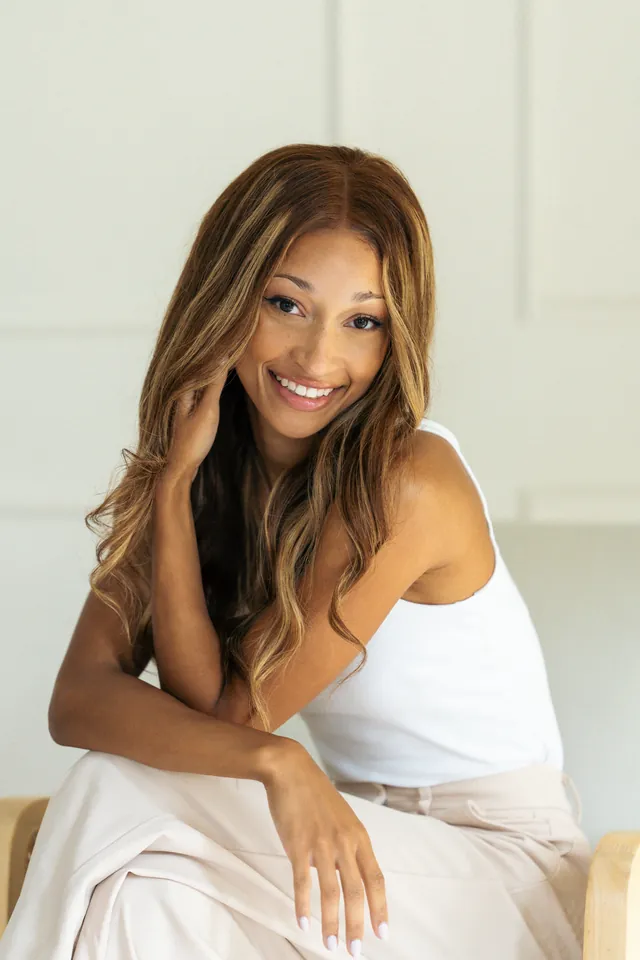
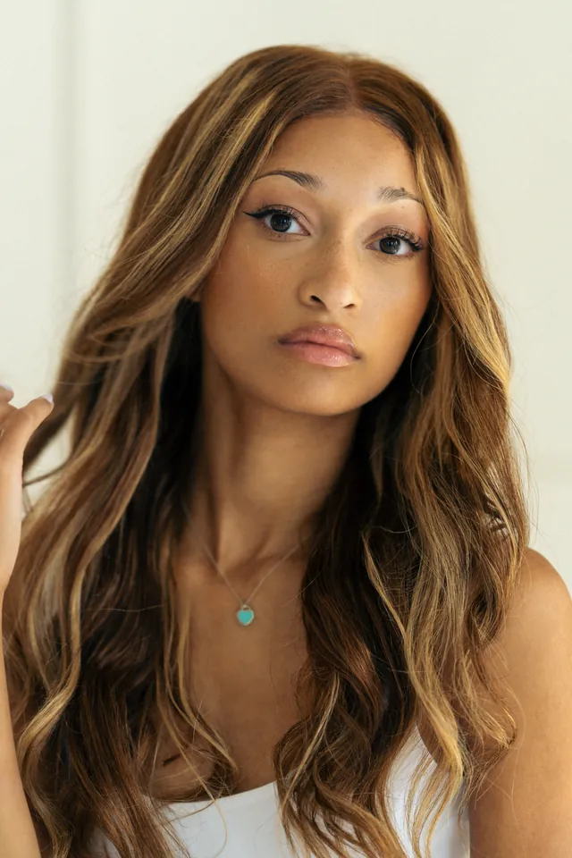
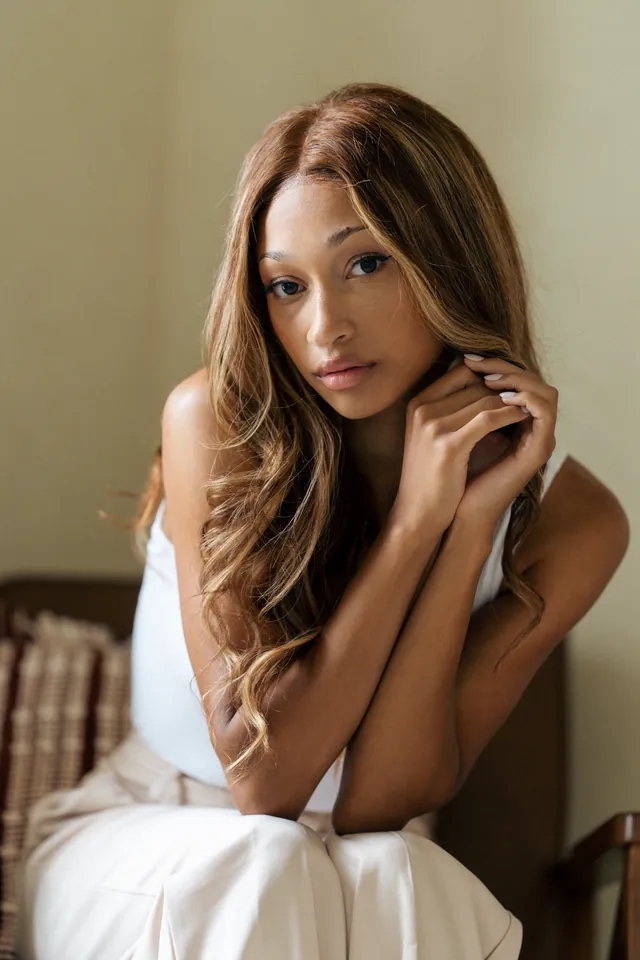
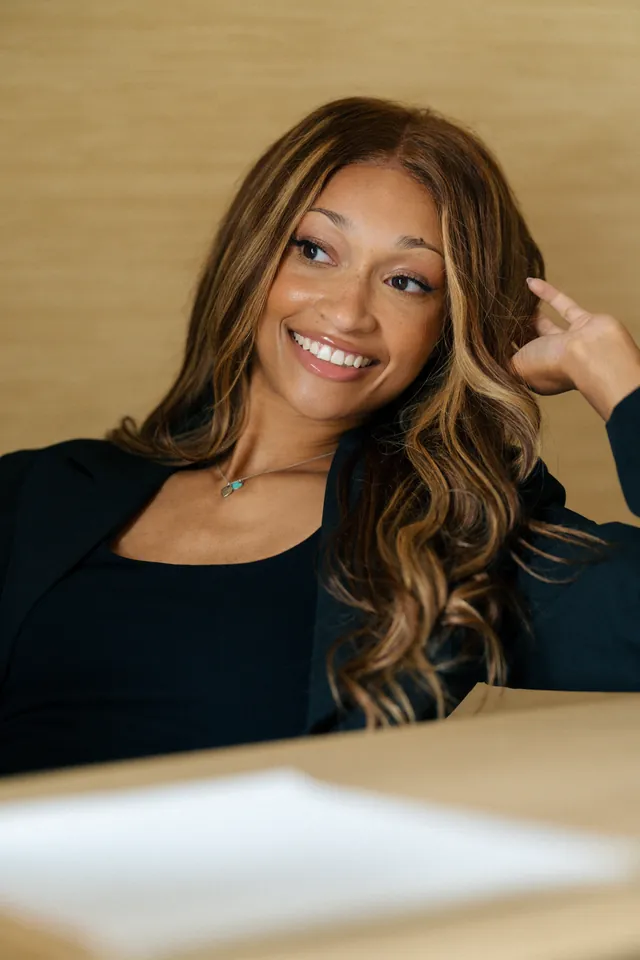
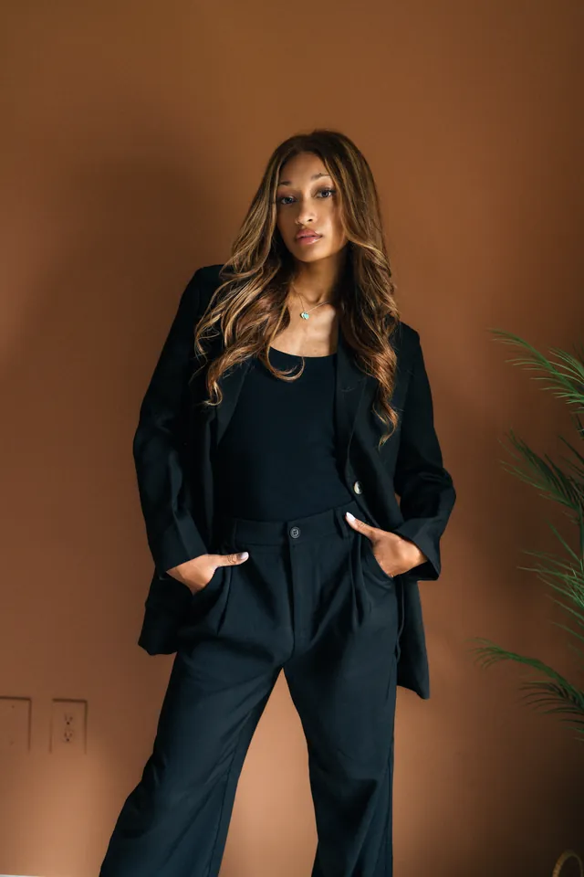

Portrait Study 01
Confidence, ease, and range.
A strong portrait session should do more than produce one good headshot. It should create a versatile library—warm, polished, expressive, and distinctly yours.





Featured profileSydney Leah@sydneyleah98↗